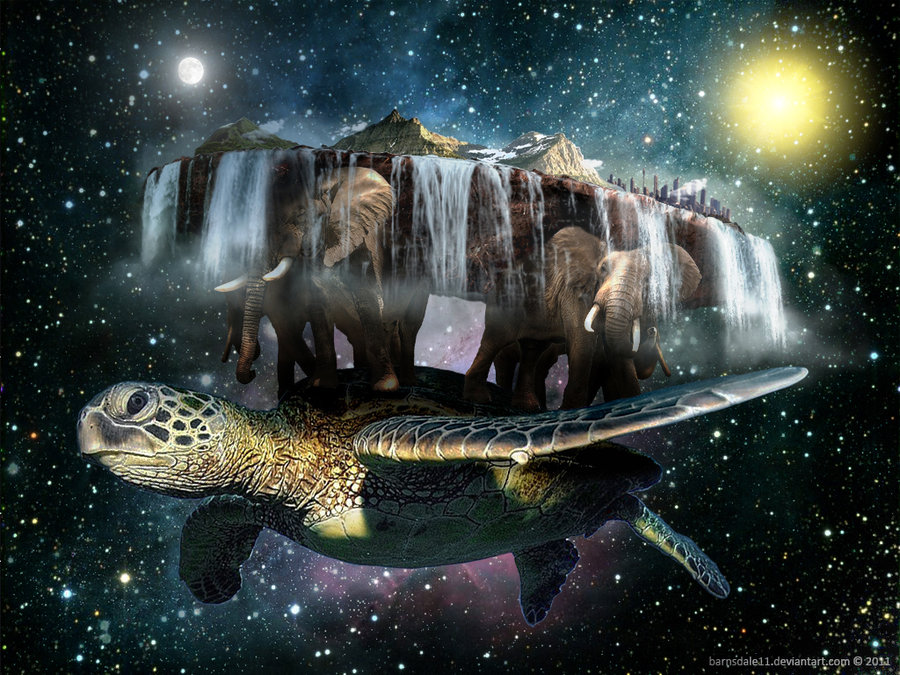
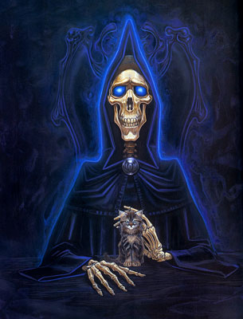

Adapted from io9

The Innocent Have Nothing To Fear
Commander Vimes didn’t like the phrase “The innocent have nothing to fear,” believing the innocent had everything to fear, mostly from the guilty but in the longer term even more from those who say things like “The innocent have nothing to fear.” - Snuff
She was already learning that if you ignore the rules people will, half the time, quietly rewrite them so that they don’t apply to you. - Equal Rites
And, while it was regarded as pretty good evidence of criminality to be living in a slum, for some reason owning a whole street of them merely got you invited to the very best social occasions. - Feet of Clay
Shoot the dictator and prevent the war? But the dictator is merely the tip of the whole festering boil of social pus from which dictators emerge; shoot one, and there’ll be another one along in a minute. Shoot him too? Why not shoot everyone and invade Poland? In fifty years’, thirty years’, ten years’ time the world will be very nearly back on its old course. History always has a great weight of inertia. - Lords and Ladies
Fear is a strange soil. Mainly it grows obedience like corn, which grows in rows and makes weeding easy. But sometimes it grows the potatoes of defiance, which flourish underground. - Small Gods
The World Belongs To The Entitled
There are, it has been said, two types of people in the world. There are those who, when presented with a glass that is exactly half full, say: this glass is half full. And then there are those who say: this glass is half empty.
The world belongs, however, to those who can look at the glass and say: ‘What’s up with this glass? Excuse me? Excuse me? This is my glass? I don’t think so. My glass was full! And it was a bigger glass! And at the other end of the bar the world is full of the other type of person, who has a broken glass, or a glass that has been carefully knocked over (usually by one of the people calling for a larger glass), or who had no glass at all, because they were at the back of the crowd and had failed to catch the barman’s eye. - The Truth
“The secret is not to dream,” she whispered. “The secret is to wake up. Waking up is harder. I have woken up and I am real. I know where I come from and I know where I’m going. You cannot fool me anymore. Or touch me. Or anything that is mine.” - Tiffany Aching, The Wee Free Men
I believe in freedom, Mr. Lipwig. Not many people do, although they will, of course, protest otherwise. And no practical definition of freedom would be complete without the freedom to take the consequences. Indeed, it is the freedom upon which all the others are based. - Vetinari, Going Postal
It was so much easier to blame it on Them. It was bleakly depressing to think that They were Us. If it was Them, then nothing was anyone’s fault. If it was Us, what did that make Me? After all, I’m one of Us. I must be. I’ve certainly never thought of myself as one of Them. No one ever thinks of themselves as one of Them. We’re always one of Us. It’s Them that do the bad things. - Jingo
“All right,” said Susan. “I’m not stupid. You’re saying humans need... fantasies to make life bearable.”
REALLY? AS IF IT WAS SOME KIND OF PINK PILL? NO. HUMANS NEED FANTASY TO BE HUMAN. TO BE THE PLACE WHERE THE FALLING ANGEL MEETS THE RISING APE.
“Tooth fairies? Hogfathers? Little—”
YES. AS PRACTICE. YOU HAVE TO START OUT LEARNING TO BELIEVE THE LITTLE LIES.
“So we can believe the big ones?”
YES. JUSTICE. MERCY. DUTY. THAT SORT OF THING.
“They’re not the same at all!”
YOU THINK SO? THEN TAKE THE UNIVERSE AND GRIND IT DOWN TO THE FINEST POWDER AND SIEVE IT THROUGH THE FINEST SIEVE AND THEN SHOW ME ONE ATOM OF JUSTICE, ONE MOLECULE OF MERCY. AND YET—Death waved a hand. AND YET YOU ACT AS IF THERE IS SOME IDEAL ORDER IN THE WORLD, AS IF THERE IS SOME...SOME RIGHTNESS IN THE UNIVERSE BY WHICH IT MAY BE JUDGED.
“Yes, but people have got to believe that, or what’s the point—”
MY POINT EXACTLY. - Susan and Death, The Hogfather
